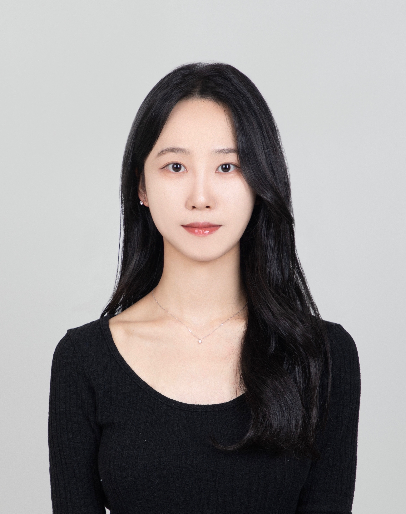

|
Seohui Bae
배서희
I'm a research scientist at LG AI Research in South Korea.
At LG AI Research, I'm working on AI systems that model the world, make decisions, and adapt under uncertainty. I completed my bachelor's and master's studies at KAIST, where I was fortunate to be advised by Prof. Eunho Yang.
Email /
Google Scholar /
LinkedIn
|

|
News
- (26.05) I will attend ICML 2026 in Seoul 🇰🇷
- (26.02) 1 paper accepted to CVPR 2026. See you all in Denver 🇺🇸
- (26.01) 1 paper accepted to ICASSP 2026.
- (25.07) I will be attending ICML 2025 this July. See you in Vancouver 🇨🇦
|
Research
I study how language models and AI agents can acquire stronger reasoning and decision-making abilities through post-training, interaction, and structured supervision. My research focuses on training models to reason over complex decision spaces, building scalable environments and data for learning, and enforcing structural constraints during generation.
- LLM Reasoning & Post-Training: Developing reinforcement learning, verifier-guided training, and structured supervision methods for improving reasoning and sequential decision-making. I am particularly interested in understanding which reasoning abilities are trainable and transferable across tasks
[P2, P5, P6], C1]
- Data, Environment & Curriculum Scaling: Building executable environments and generative data pipelines for scalable training, evaluation, and curriculum learning. I study how environment and data distributions can be actively designed to improve model capabilities.[P3,P4]
- Structured & Constrained Generation: Developing generative and learning methods that incorporate discrete structure, hard constraints, and domain knowledge, with applications to reliable reasoning, planning, and constrained generation. [P7]
I regularly contribute to academic publications and collaborative research projects.
I’m especially interested in bridging industrial challenges with generalizable solutions in: RL post-training, constrained diffusion policies, and data and environment scaling.
|
Selected Publications
(* equal contribution; † corresponding author). For the full list, see Google Scholar.
[C#] conferences; [P#] preprints/under review
-
[P5] Net Ordering Is a Topological Decision: Small LLMs Rival Frontier Models at PCB Routing
[pdf]
Seohui Bae, Won-Seok Choi, Hyungseok Song, Han-Seul Jeong, Youngjoon Park†, Soonyoung Lee†
under review
-
[P4] Solvable Environment Design: Difficulty-Conditioned Diffusion for Curriculum RL in PCB Routing
[pdf]
Seohui Bae, Junseok Park, Hyungseok Song, Han-Seul Jeong, Youngjoon Park†, Soonyoung Lee†
under review
-
[P3] PCBWorld: A Benchmark Environment for Engine-Grounded PCB Design Automation
[pdf] [code]
Hyungseok Song*, Junseok Park*, Won-Seok Choi*, Seohui Bae, Han-Seul Jeong, Youngjoon Park†, Soonyoung Lee†
KDD Workshop on Evaluation and Trustworthiness of Agentic AI, 2026
-
[P2] Align as Act: Innovations-Based Reward Decomposition for LLM Agents
[pdf]
Sojeong Rhee*, Seohui Bae*, Jongeui Park, Whiyoung Jung, Soonyoung Lee, Woohyung Lim, Youngchul Sung
COLM Workshop on Agent Behavior, 2026
-
[C1] Align While Search: Belief-Guided Exploratory Inference for World-Grounded Embodied Agents
[pdf]
Seohui Bae, Jeonghye Kim, Youngchul Sung, Woohyung Lim
Conference on Computer Vision and Pattern Recognition (CVPR), 2026
ICML Workshop on Exploration in AI Today, 2025
|
Projects
Current @ LG AI Research
- RL for AI Agents
- Post-training and scalable generation of data, trajectories, and environments for language-model agents.
- Generative policies for constrained planning and decision-making.
- Industrial Optimization
- RL for sequential decision-making in manufacturing.
- Agent training and environment for electronic design automation.
Past @ LG AI Research
- EXAONE-Futurecast
- Demand Forecasting
|
Academic Service
Conference Reviewer
- Main: ICLR, ICML, NeurIPS, AAAI, AISTATS
- Workshops: AAAI, ICLR, ICML
Journal Reviewer
|
Last date of update: 2026-05-16 / template
|
|
{kind=link}